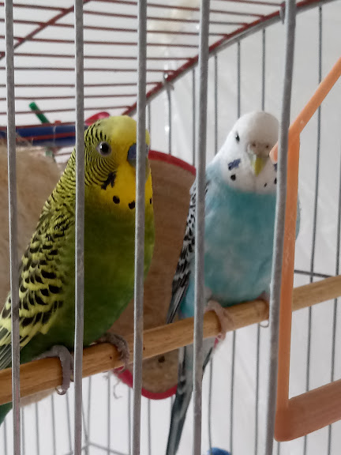
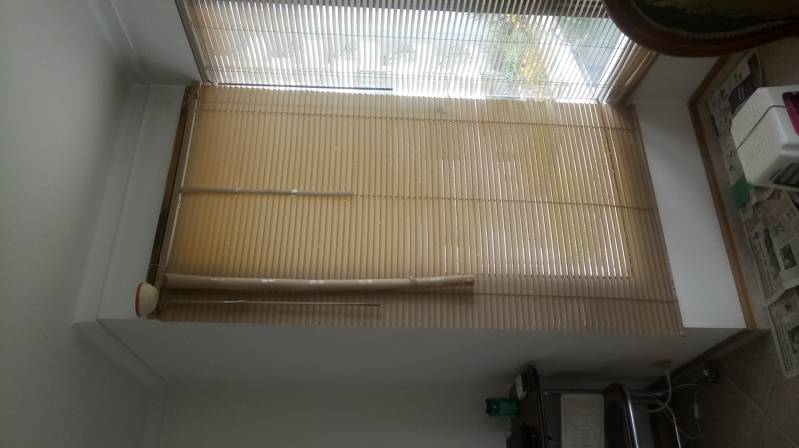

Carmen
Carmen
Platanito
Hoy Platanito se durmió afuera, a veces hace eso; Lo unico malo es que no los podemos tapar con la manta y eso hace que al menos Plumitas, que no duerma tan bien. Por lo que hoy estuvo en la mañana aún medio dormida. Aunque ya hece un rato despertó.
Tratamiento de ciertas enfermedades de periquitos:
Para el decaímiento y malestar general: Gotas con un medicamento especial. Se consiguen en acuarios y tiendas veterinarias. Debe consultarse con personal especializado o con un veterinario la cantidad adecuada y frecuencia.
Para los hongos, lo ideal es igualmente consultar con un veterinario o tienda de mascotas. Allá podrán recomendarte una fórmula adecuada de antiparasitario, en la cantidad adecuada para aves, que los médicos veterinarios conocen y que es diferente de la que usan humanos u otros animales. Si se usa pura o mal preparada, es tóxica y puede ser letal para el periquito.
Recuerda que estas son sólo ideas, pero no reemplazan una consulta veterinaria. Lleva tu ave a evaluación antes de darle cualquier tratamiento
Carmen
La temperatura en los periquitos
Hoy voy a hablarles un poco sobre la temperatura en los periquitos. Los periquitos están predestinados para vivir en un entorno caliente, y aunque tienen medios para regular el frío (por ejemplo, con sus plumas), no se debe abusar de esto. Aquí algunos datos a tener en cuenta:

Platanito y Plumas
Ahora para terminar, un dato curioso
La reina Isabel tuvo periquitos!
Si! La reina Isabel II tenía y tiene periquitos. Cuando era niña, le regalaron una parejita y desde entonces le gusta cuidar y escuchar a sus periquitos. Incluso se sabe que una vez salvó la vida a uno cuando una de sus patas quedo atrapada en una jaula de alambre. Esto demuestra que no importa quien seas, siempre un periquito te hara bien!
Reina Isabel II

Isabel y sus periquitos
Carmen
Plumas está loca parte 2
Como ya saben, Plu, ha estado mordiendo el hilo de la persiana y me da miedo que se rompa. Cada ves que lo mordía yo la movía de ese lugar, pero aún así sigue comiedo así que le hise un protector al hilo. Ahora recuerdo que con Platan pasaba lo mismo y le pusimos un protector por el hilo que mordía y no volvió a morderlo. Espero que igual pase con el caso de Plu. Aquí les dejo algunas fotos del protector:
| 
Persiana de Plu y Pla |

Protector que le habiamos hecho a Platan |

Protecto que lo hisimos a Plu para que no se coma el hilo |
Carmen
Curiosidades
Hoy les voy a contar 6 curiosidades sobre los periquitos:
- Los periquitos han vivido desde hace 5 millones de años en australia
- Los periquitos tienen una vista mejor que la humana, además de los colores que conocemos, ven la luz ultravioleta y tienen un campo de visión más amplio
- La media de vida de los periquitos sanos es de 12 años
- La mandibula de las periquitas es más fuerte, ya que ellas hacen nidos, por lo que pican más duro
- España es uno de los paises con más periquitos, hay más de 10 millones
- La palaba "budgerigar" (periquito en inglés) viene de una tribu indígena australiana donde los llamaban "betcherigar" que significa "buena comida". ¡Al menos ya no comemos periquitos!
Carmen
Plumas está loca
Hoy Plumas se levantó temprano a volar, como en los ultimos días, pero, cuando vuela a la persiana comienza a morder los hilos que la sostienen así que si los muerde se daña. No sé si muerde duro pero cada vez que hace eso le pongo el dedo para que se suba y la alejo de las cuerdas. Platanito también comía cuerda, pero despues de un tiempo pusimos un tubo por una cuerda y ya no volvió a comerla.
Carmen
Un poco de mi
¡Hola! Soy Carmen, este es una de mis primeras paginas web. Aqui quiero compartiles experiencias, entre otros de mis periquitos.
Tengo 2 periquitos: Plumas y Platanito. A Plumas me la dieron en mi cumpleaños del 2016, con otro periquito llamado Banano. Hemos vivido muclas aventuras juntos. En febrero del 2019 Banano murió :( Plumas estaba muy sola, así que le trajimos a Platanito! Es un pio muy alegre y activo. Despues les contaré más de ellos, espero que disfruten el blog :).
Nota: esta funcion aun esta en prueba, puede no funcionar bien